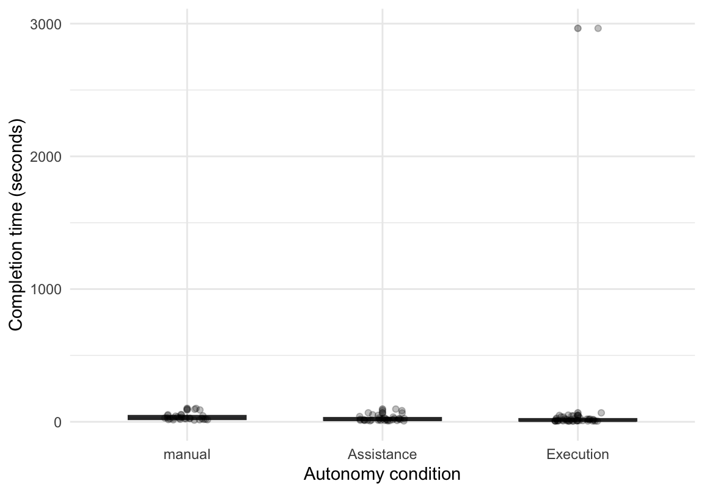
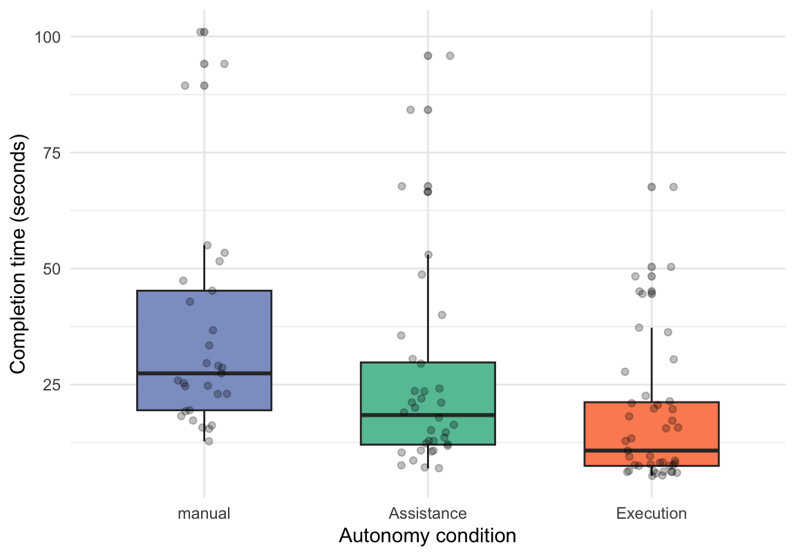
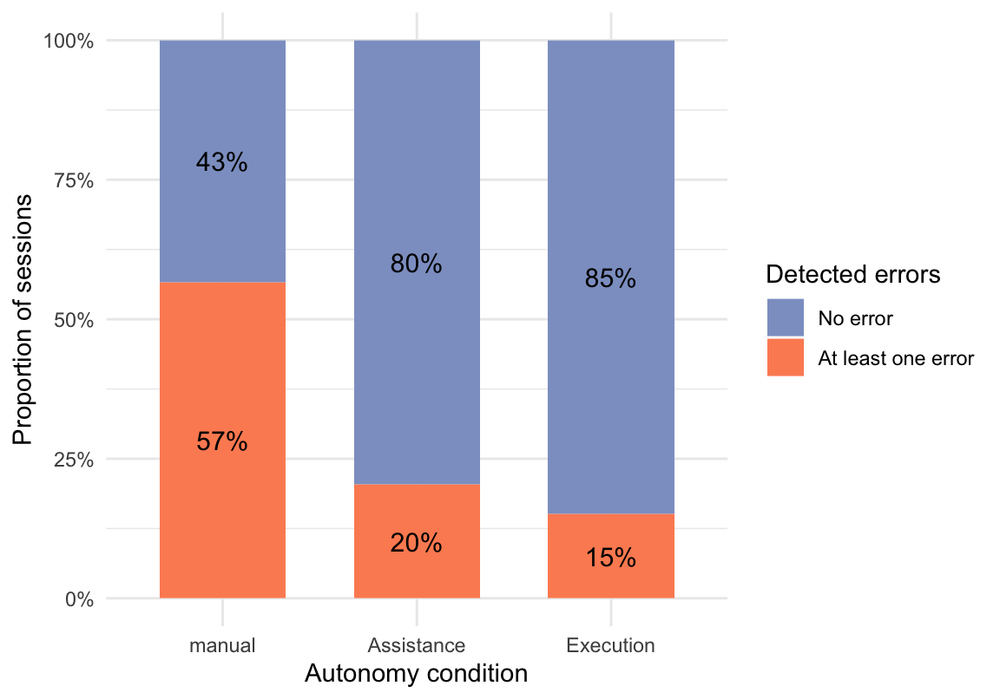
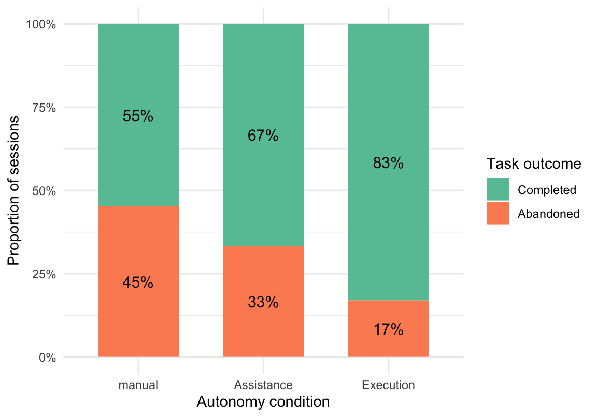
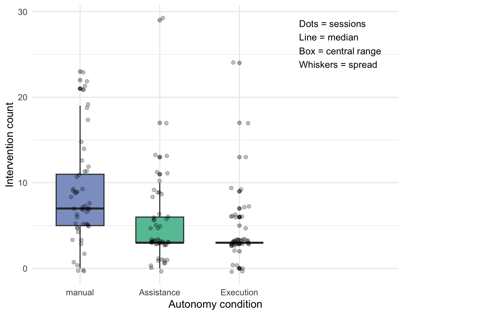
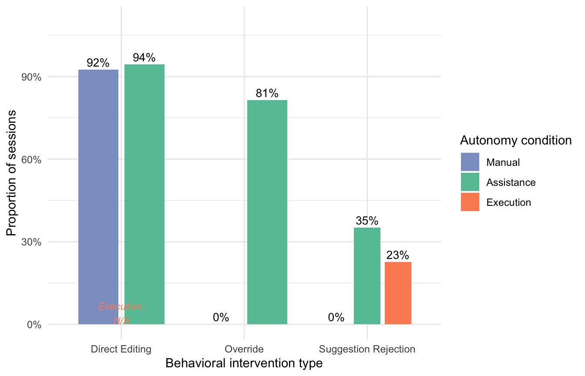

| Condition | Participants |
|---|---|
| Total | 228 |
| Assistance | 75 |
| Execution | 76 |
| Information | 4 |
| manual | 76 |
The Impact of AI Execution Autonomy on User Task Performance and Intervention Behavior in Digital Workflows
1 Introduction
Artificial intelligence (AI) systems are increasingly embedded in digital workflows, evolving from tools that provide decision support toward systems capable of autonomously executing actions. In many contemporary applications, AI no longer functions merely as a source of information or recommendations but actively participates in shaping and executing decisions. This shift from assistance to autonomous execution fundamentally changes the distribution of control, responsibility, and risk between human users and technical systems.
The distribution of decision authority between humans and automated systems has long been a central concern in human–automation interaction research. Early work by Sheridan and Verplank (1978), as well as later frameworks by Parasuraman, Sheridan, and Wickens (2000), conceptualize automation as a continuum of autonomy, ranging from full human control to full system control. These models demonstrate that different levels of automation can significantly influence human performance, error behavior, and reliance on automated systems. However, much of this research has primarily focused on assistive systems in which humans retain primary decision authority.
More recent research in human–computer interaction has increasingly emphasized subjective constructs such as trust, perceived usefulness, and user satisfaction (Lee & See, 2004; Hoff & Bashir, 2015). While these perspectives provide valuable insights, they offer limited understanding of how users behave in concrete task execution scenarios, particularly in systems where AI assumes execution authority. As a result, there remains a lack of empirical, behavior-based evidence on how execution autonomy affects observable task outcomes and user intervention behavior in real interaction contexts.
This study addresses this gap by investigating how different levels of AI execution autonomy affect user task performance and intervention behavior in AI-assisted digital workflows. Specifically, three autonomy levels are examined—manual, assistance, and execution—which represent distinct distributions of decision authority between the user and the system. The analysis focuses on measurable behavioral outcomes, including task completion time, detected errors, abandonment, and intervention frequency, enabling a systematic comparison across conditions.
This leads to the following research question:
“How does the level of AI execution autonomy affect user task performance and intervention behavior in AI-assisted digital workflows?”
The study adopts a controlled experimental design in which user interactions are captured through system-generated logs. Instead of relying on self-reported measures, behavioral data is used to assess how users perform tasks and how often they intervene under different autonomy conditions. By operationalizing AI execution autonomy as a system-level property—rather than as a feature of a specific model—the study isolates the effect of execution authority within a controlled task environment. This reflects how AI systems are typically implemented in real-world applications, where autonomy emerges from system design rather than from the underlying model alone.
The contribution of this study lies in providing a behaviorally grounded, log-based analysis of AI execution autonomy. By capturing real user interactions in a controlled setting, the study enables a systematic comparison of task performance and intervention behavior across autonomy levels. The findings contribute to a more empirical understanding of how autonomy shapes human–AI interaction and provide practical insights for designing AI-assisted systems that balance efficiency and user control.
2 Theory
2.1 AI Execution Autonomy
Automation has long been conceptualized as a continuum that differs in the extent to which control is allocated to the machine rather than to the human operator. Early work by Sheridan and Verplank (1978) described levels of automation in terms of how much authority is transferred from the human to the system. Parasuraman et al. (2000) extended this view by distinguishing not only levels of automation, but also stages of information processing, showing that automation can support or replace the human at different points in the task cycle. This distinction is important because the consequences of automation depend not only on how much control is delegated, but also on which function is being delegated. oai_citation:0‡ResearchGate
In more recent human–automation research, higher degrees of autonomy have increasingly been discussed not simply as support tools, but as systems that take over larger portions of decision making and action execution. This shift is especially relevant in contemporary AI systems, which are no longer limited to presenting information or recommendations, but can increasingly generate, select, and implement actions within a workflow. Endsley (2017) argues that greater autonomy changes the demands placed on human oversight, because the human role shifts from direct task execution toward supervision, monitoring, and possible intervention. Similarly, Wickens et al. (2010) show that different levels and stages of automation are associated with systematic trade-offs in performance and human involvement. oai_citation:1‡Sage Journals
Against this background, AI execution autonomy in the present study is defined as the extent to which the system independently determines and executes task-related actions within a workflow. This definition emphasizes execution authority rather than mere recommendation. In the manual condition, execution authority remains with the user and the system performs only validation. In the assistance condition, the system generates a suggested solution, but the user retains the ability to modify it. In the execution condition, the system determines the task configuration directly and the user’s role is reduced to acceptance, rejection, or re-selection. These conditions therefore represent qualitatively different allocations of control and provide a concrete operationalization of execution autonomy for empirical comparison. ## User Task Performance User task performance refers to how effectively and efficiently a task is completed within a given human–system arrangement. In automated and semi-automated environments, performance is not solely a property of the user, but of the joint human–automation system. Parasuraman et al. (2000) and Parasuraman and Wickens (2008) emphasize that automation can improve performance by reducing cognitive demands and supporting routine processing, but that such benefits depend strongly on the type and degree of automation implemented. oai_citation:2‡Sage Journals
In much of the literature, the effects of automation have been examined through constructs such as trust, reliance, situation awareness, and workload. These are important because they shape how users interact with automation. However, they do not directly capture whether the task was completed quickly, accurately, and successfully. For execution-oriented AI systems, this distinction becomes particularly important: if the system takes over more of the workflow, its value should also be reflected in observable task outcomes, not only in subjective impressions. Lee and See (2004) and Hoff and Bashir (2015) show that trust influences reliance on automation, but these trust-centered perspectives do not by themselves provide a full account of concrete task performance in execution contexts. oai_citation:3‡Sage Journals
For this reason, the present study conceptualizes user task performance in behavioral terms. Three objective indicators are used: completion time, detected errors, and task abandonment. Completion time captures efficiency, that is, how quickly the task is completed. Detected errors capture breakdowns in valid task execution when system constraints are violated. Task abandonment captures unsuccessful task progression, indicating that task initiation did not lead to completion. Together, these measures provide a direct and observable view of task performance under different levels of AI execution autonomy. ## Intervention Behavior Whereas task performance captures the outcome of interaction, intervention behavior captures the extent to which users step in and modify, override, or reject the system’s actions during task execution. In human–automation interaction, intervention is closely tied to the broader issues of monitoring, reliance, trust, and supervisory control. Lee and See (2004) argue that users must calibrate their reliance on automation appropriately, and this calibration often becomes visible in whether they accept automation outputs or choose to intervene. Endsley (2017) similarly emphasizes that higher autonomy does not eliminate the human role, but often transforms it into one of supervision and recovery when the system output is questioned or needs correction. oai_citation:4‡Sage Journals
Intervention is therefore theoretically important because it reflects how users respond to different allocations of control. A low level of intervention may indicate that the system output was accepted with little need for correction, but it may also reflect a lack of opportunity to intervene. A high level of intervention may indicate preserved user control, reduced confidence in the system, or the need to correct inadequate system outputs. As a result, intervention should not be interpreted as inherently positive or negative; rather, it provides evidence about how the human–AI relationship is enacted during task execution. This is particularly relevant for execution-oriented systems, where the human may not make every task decision directly, but may still monitor, edit, or override the system when needed. oai_citation:5‡Sage Journals
In the present study, intervention behavior is operationalized through system-logged user actions. Specifically, interventions include edits of task parameters (FIELD_EDIT), overrides of system-generated decisions (OVERRIDE), and rejection or regeneration of outputs (AI_SUGGESTION_REJECTED). This allows intervention to be examined both as a binary occurrence (whether any intervention took place) and as a quantitative count (how often intervention occurred). In addition, the specific forms of intervention can be distinguished descriptively, making it possible to examine not only whether users intervened, but also how they intervened. ## Research Gap and Hypotheses Although human–automation research provides a strong foundation for understanding the distribution of control between people and systems, several limitations remain when this literature is applied to contemporary AI execution contexts. First, much of the established literature has focused on automation broadly defined, often in relation to trust, reliance, workload, and situation awareness rather than on objective, behavior-based outcomes in digital task workflows. Second, a large proportion of prior work has examined assistive or advisory automation, in which the human still retains primary execution authority. As a result, less is known about what happens when AI systems move beyond support and begin to shape or execute task outcomes more directly. oai_citation:6‡Sage Journals
This gap is especially relevant because execution-oriented AI changes the role of the user. When the system not only recommends but also performs workflow-relevant actions, the central design question is no longer simply whether users trust or like the system, but how different levels of execution autonomy affect observable performance and intervention patterns. Existing theories imply that such effects should exist, but they do not yet provide sufficient empirical evidence for behavior-based comparisons in execution-oriented digital workflows. This gap is therefore not only conceptual but also methodological: objective log-based evidence comparing manual, assistance, and execution conditions remains limited. This gap statement is an inference drawn from the literature reviewed above, which heavily emphasizes trust, reliance, situation awareness, and broad automation design rather than direct comparison of behavioral workflow outcomes under different levels of execution autonomy. oai_citation:7‡Sage Journals
To address this gap, the present study examines how different levels of AI execution autonomy affect user task performance and intervention behavior in a controlled digital workflow using system-generated log data. Based on the theoretical expectation that higher execution autonomy can reduce manual effort and alter the need for user intervention, the following hypotheses are proposed:
H1: Higher levels of AI execution autonomy improve user task performance, as reflected in reduced completion time, lower error occurrence, and lower abandonment rates.
H2: Higher levels of AI execution autonomy reduce user intervention during task execution.
3 Methods
3.1 Study Design
This study employed a between-subject experimental design with three conditions representing different levels of AI execution autonomy: Manual, Assistance, and Execution.
Participants were randomly assigned to one of the three conditions and completed a single task within the assigned condition. The between-subject design was chosen to avoid learning effects and to ensure that user behavior was not influenced by prior exposure to other autonomy levels.
3.2 Prototype and Logging
A web-based exam registration system was developed to simulate a realistic academic workflow. The system required users to select a semester, choose an exam period, and configure a valid set of exams under predefined constraints.
User interactions were logged using a backend logging system implemented with Supabase. The logging system captured event-level interaction data, including:
• user actions (e.g., TASK_STARTED, TASK_COMPLETED, ERROR_SHOWN, FIELD_EDIT, OVERRIDE, AI_SUGGESTION_REJECTED)
• timestamps (client-side and server-side)
• session identifiers
• assigned condition (mode)The collected data was stored as structured event logs and exported as CSV files for analysis. This approach enabled a detailed reconstruction of user behavior during task execution.
3.3 Variables
The independent variable (IV) in this study was the level of AI execution autonomy, with three levels:
• Manual
• Assistance
• ExecutionThe dependent variables (DVs) captured objective behavioral outcomes derived from interaction logs:
• **Task completion time**
• **Error occurrence**
• **Task abandonment**
• **Intervention behavior**These variables were operationalized based on observable interaction events.
3.4 Sample
A total of 231 participants were included in the study. The participant distribution across conditions is shown in Table 1.
An important issue in the dataset is the presence of the “Information” mode, which theoretically should not exist as an active interaction condition. Therefore, it is necessary to investigate why this mode appears in the logs and what type of events have been recorded under it. To assess this, a validity check was conducted by filtering all entries associated with the “Information” mode and inspecting their session IDs and logged actions.
# A tibble: 4 × 2
session_id action
<chr> <chr>
1 S-7QR92FMR PAGE_VIEW
2 S-KY2JLRYQ PAGE_VIEW
3 S-NT977W23 PAGE_VIEW
4 S-OQKZ8TJ1 PAGE_VIEWThe inspection showed that the “Information” mode contained only four log entries, all of which were recorded as PAGE_VIEW events. This indicates that these entries reflect passive page access rather than meaningful task-related interaction. Therefore, the “Information” mode was treated as invalid and excluded from further analysis to ensure data quality, cleanliness and consistency.
| Condition | Participants |
|---|---|
| Total | 224 |
| Assistance | 75 |
| Execution | 76 |
| manual | 76 |
Repeated participation was intended to be prevented by the system design. However, to ensure data validity, an additional check was conducted at the session level, since repeated participation may still occur despite implemented controls in the experimental environment. Therefore, sessions were used to verify that each participant contributed only one observation and to avoid overcounting repeated entries.
| Condition | Sessions |
|---|---|
| Assistance | 75 |
| Execution | 76 |
| manual | 76 |
The results show a balanced distribution of unique sessions across conditions, indicating that each participant contributed only one observation and that no overcounting occurred.
3.5 Measures
All dependent variables were derived from system-generated event logs and aggregated at the session level.
Task completion time was defined as the time interval between task start and task completion within a session. Specifically, it reflects the elapsed time between the first TASK_STARTED event and the corresponding TASK_COMPLETED event. As this measure requires a valid endpoint, it was calculated only for sessions that were completed successfully.
To complement this efficiency-based measure, task abandonment was included as an indicator of unsuccessful task progression. Task abandonment was defined as sessions in which users initiated but did not complete the task. Thus, a session was classified as abandoned when a TASK_STARTED event was recorded without a corresponding TASK_COMPLETED event. Figure 1 provides an overview of overall task progression across all 224 participants. It shows the number of participants who entered the system but did not start the task, those who started the task but did not complete it, and those who started and successfully completed the task.

Building on this general overview, Figure 1 first showed overall task progression across the full sample and indicated that 64 participants did not start the task at all. The following analysis therefore focuses only on the 160 participants who initiated the task. Among these started sessions, the aim is to examine how task outcomes were distributed across the three autonomy conditions by distinguishing between participants who started but did not complete the task and those who started and successfully completed it. To display these condition-specific differences more clearly, a grouped bar chart was used in Figure 2.

Figure 2 shows the distribution of task outcomes among participants who started the task, separated by autonomy condition. Across all three conditions, completed sessions outnumbered abandoned sessions. The Execution condition showed the highest number of completed sessions and the lowest number of abandoned sessions, whereas the manual condition showed the highest number of abandoned sessions.
Error occurrence was operationalized through ERROR_SHOWN events. Sessions were included in this analysis if a task had been started, regardless of whether the task was later completed or abandoned. This approach ensured that validation problems encountered during task execution were captured independently of final task outcome. Abandoned sessions were retained in the analysis because errors themselves may have contributed to task abandonment. We further examined whether error occurrence differed between completed and abandoned sessions. As shown in Figure 3, a 100% stacked bar chart was used to compare the proportion of sessions with and without errors across the two task outcomes. This visualization makes it possible to assess what percentage of completed sessions contained at least one error and what percentage of abandoned sessions contained at least one error.

Figure 3 shows the proportion of sessions with and without errors across completed and abandoned started sessions. A higher proportion of abandoned sessions contained at least one error (37%) compared with completed sessions (28%). This pattern suggests that validation errors may have contributed to task abandonment, although no causal conclusion can be drawn from this descriptive comparison alone. To further refine this analysis, error occurrence was examined separately for each autonomy condition. This makes it possible to compare how the proportion of sessions with and without errors differed between completed and abandoned sessions within the Manual, Assistance, and Execution conditions.

Figure 4 shows that error occurrence varied substantially across autonomy conditions. The Manual condition displayed the highest proportion of sessions with errors in both completed and abandoned sessions, whereas the Execution condition showed the lowest error proportions overall. The Assistance condition fell between these two extremes. At the same time, the relationship between error occurrence and task outcome was not uniform across conditions, suggesting that the role of validation errors may differ depending on the level of AI execution autonomy.
Intervention behavior was operationalized as active user interference with the task configuration or the system output. At the session level, intervention was defined based on the occurrence of FIELD_EDIT, OVERRIDE, and AI_SUGGESTION_REJECTED events. For the following descriptive overview, a binary intervention indicator was used to distinguish between sessions with at least one intervention and sessions without any intervention. Only started sessions were included in this analysis, regardless of whether the task was later completed or abandoned. Intervention should be measured for all started sessions, because it reflects user behavior during task execution rather than successful task completion. Figure 5 shows the proportion of sessions with and without intervention across the three autonomy conditions.

Figure 5 shows that intervention occurred in the large majority of started sessions across all three autonomy conditions. The proportion of sessions with at least one intervention was consistently high in the Manual, Assistance, and Execution conditions, indicating that user intervention was common regardless of autonomy level. At the descriptive level, only minor differences between conditions were observed.
This pattern may indicate that the binary intervention measure captured a very broad range of user actions, thereby limiting its ability to differentiate more clearly between autonomy conditions. Alternatively, it may suggest that intervention was generally required across conditions due to the structure of the task. These interpretations are considered in the discussion.
Figure 6 provides a more fine-grained view of intervention behavior by showing the distribution of intervention counts across the three autonomy conditions. In contrast to the binary intervention indicator used in Figure 5, this analysis captures how often users intervened within a session. Only started sessions were included, as intervention could only occur once task execution had begun.

Figure 6 suggests that intervention frequency differed across autonomy conditions. The Manual condition showed the highest intervention counts overall, whereas the Execution condition showed the lowest. The Assistance condition fell between these two extremes. This descriptive pattern is consistent with the expectation that greater execution autonomy reduces the need for user intervention, although formal statistical testing is required to assess whether these differences are significant.
3.6 Data Preparation and Analysis
The raw dataset consisted of event-level interaction logs. Prior to analysis, all entries associated with the Information mode were excluded because they reflected passive PAGE_VIEW events rather than meaningful task-related interaction. In addition, repeated participation was checked at the participant-session level, and no repeated entries were identified. After this cleaning step, the data were aggregated to the session level, so that each session represented one participant’s interaction within one assigned condition.
Based on this session-level aggregation, summary variables were derived for task progress, task completion, abandonment, error occurrence, and intervention behavior. Sessions in which the task was not started were retained for the descriptive overview of overall task progression, but they were excluded from analyses that required actual task execution. Accordingly, abandonment, error occurrence, and intervention behavior were analyzed only for started sessions. Task completion time was calculated only for completed sessions, as this measure required both a valid start point and a valid end point.
Statistical analyses will be conducted according to the measurement level of the respective variables. As task completion time represents a continuous outcome across three autonomy conditions, differences will be examined using a non-parametric Kruskal–Wallis test, followed by pairwise Wilcoxon rank-sum tests where appropriate. Abandonment, error occurrence, and intervention occurrence will be analyzed as categorical outcomes using chi-square and proportion-based tests.
4 Results
This section reports the empirical results in relation to the two hypotheses of the study. First, the effects of AI execution autonomy on task performance are examined, including completion time, detected errors, and task completion versus abandonment. Second, the effects on intervention behavior are presented, covering intervention occurrence, intervention frequency, and the different types of intervention observed across conditions.
4.1 H1: Task Performance
To evaluate H1, task performance was examined across the three autonomy conditions using three outcome dimensions: completion time, detected errors, and task completion versus abandonment. Together, these measures provide an overview of how efficiently and successfully participants performed the task under different levels of AI execution autonomy.
4.1.1 Completion Time
Task completion time was operationalized as the elapsed time between the beginning and the successful completion of task execution within a session. For this measure, TASK_STARTED was treated as the starting point of task execution, and TASK_COMPLETED was treated as the endpoint indicating successful task completion. Because the analysis focused on elapsed interaction time within the system, completion time was calculated using the client-side timestamp variable (client_ts_ms). This timestamp was used because it directly reflects the temporal order and duration of user interactions during task execution. Accordingly, completion time was defined only for sessions in which both a valid task start and a valid task completion event were recorded.
| Condition | Mean | Median | Min | Max |
|---|---|---|---|---|
| manual | 36.07 | 27.42 | 12.77 | 100.97 |
| Assistance | 26.08 | 18.44 | 6.99 | 95.84 |
| Execution | 84.82 | 11.82 | 5.34 | 2964.74 |

Because the initial descriptive summary and visualization suggested substantial skewness in completion time—particularly due to very large values in the Execution condition—an additional inspection of extreme cases was conducted before proceeding to inferential analysis. Specifically, the longest completion times were reviewed, and the number of sessions exceeding predefined thresholds was examined. This step was intended to assess whether unusually large completion times reflected meaningful observations or extreme cases that might distort the descriptive distribution and subsequent statistical comparison.
| session_id | mode | completion_time |
|---|---|---|
| S-E1WBD47E | Execution | 2964.736 |
| S-21WAOP00 | manual | 100.968 |
| S-F5OFN5A6 | Assistance | 95.845 |
| S-O1IMAN9C | manual | 94.098 |
| S-ZWN4PELR | manual | 89.414 |
| S-FRQ1PFYO | Assistance | 84.200 |
| S-7HPZY5JW | Assistance | 67.739 |
| S-HXUZS215 | Execution | 67.577 |
| S-8A4U6AVO | Assistance | 66.537 |
| S-4GNOB2GI | manual | 55.040 |
| total_completed_sessions | above_300_sec | above_600_sec | max_time |
|---|---|---|---|
| 109 | 1 | 1 | 2964.736 |
The inspection showed that only one completed session exceeded 300 seconds, with a completion time of approximately 2965 seconds. As this value was substantially larger than all other observations and strongly distorted the descriptive distribution, it was treated as an extreme outlier and excluded from the completion-time analysis. All remaining completed sessions were retained for the subsequent descriptive and inferential analyses.
| Condition | Mean | Median | Min | Max |
|---|---|---|---|---|
| manual | 36.07 | 27.42 | 12.77 | 100.97 |
| Assistance | 26.08 | 18.44 | 6.99 | 95.84 |
| Execution | 17.84 | 10.79 | 5.34 | 67.58 |

Descriptive results suggested a gradual decrease in completion time across autonomy conditions. Median completion time was highest in the Manual condition (27.42 s), followed by the Assistance condition (18.44 s), and lowest in the Execution condition (10.79 s). Mean completion times showed the same ordering, although they were consistently higher than the medians, indicating a slightly right-skewed distribution.
Because completion time was compared across three autonomy conditions and showed a slightly right-skewed distribution, a non-parametric Kruskal–Wallis test was used to examine whether completion time differed significantly between conditions.
| Statistic | df | p-value |
|---|---|---|
| 21.506 | 2 | < .001 |
A Kruskal–Wallis test showed a statistically significant difference in completion time across the three autonomy conditions, H(2) = 21.51, p < .001. This indicates that task completion time varied significantly depending on the level of AI execution autonomy.
Because the Kruskal–Wallis test indicated a significant overall difference in completion time across conditions, additional post-hoc comparisons were conducted to determine which specific pairs of autonomy conditions differed from each other. Pairwise Wilcoxon rank-sum tests were used for this purpose, with Bonferroni adjustment applied to control for multiple comparisons.
| Comparison | p-value |
|---|---|
| Assistance vs manual | 0.0136 |
| Execution vs manual | < .001 |
| Execution vs Assistance | 0.0367 |
Post-hoc pairwise Wilcoxon comparisons showed that all pairwise comparisons were statistically significant. Completion time was significantly lower in the Assistance condition than in the Manual condition (p = .0136), significantly lower in the Execution condition than in the Manual condition (p < .001), and significantly lower in the Execution condition than in the Assistance condition (p = .0367). These results indicate a stepwise reduction in completion time as AI execution autonomy increased.
4.1.2 Detected Errors
Detected errors were operationalized on the basis of ERROR_SHOWN events. For the present analysis, sessions were included if the task had been started, regardless of whether it was later completed or abandoned. At the session level, error occurrence was treated as a binary outcome indicating whether at least one validation error was recorded during task execution.

Figure 9 shows the proportion of started sessions with and without at least one detected error across the three autonomy conditions. Descriptively, the Manual condition showed the highest proportion of sessions with errors, the Assistance condition fell in between, and the Execution condition showed the lowest proportion. To examine whether detected error occurrence differed significantly across autonomy conditions, a chi-square test of independence was conducted. Because error occurrence was treated as a categorical session-level outcome, this test was appropriate for assessing differences in the distribution of error presence across conditions.
| Statistic | df | p-value |
|---|---|---|
| 25.525 | 2 | < .001 |
Because the chi-square test indicated an overall difference across conditions, additional pairwise proportion tests were conducted to determine which specific pairs of autonomy conditions differed in detected error occurrence. Bonferroni adjustment was applied to control for multiple comparisons.
| Comparison | p-value |
|---|---|
| Assistance vs manual | < .001 |
| Execution vs manual | < .001 |
| Execution vs Assistance | 1 |
The chi-square test showed that detected error occurrence differed significantly across autonomy conditions, χ²(2) = 25.53, p < .001. Post-hoc pairwise proportion tests showed that the Manual condition differed significantly from both the Assistance condition (p < .001) and the Execution condition (p < .001). However, no significant difference was found between the Assistance and Execution conditions (p = 1.00). Overall, these results indicate that started sessions in the Manual condition were substantially more likely to contain at least one detected error, whereas the Assistance and Execution conditions were associated with markedly lower error occurrence.
Descriptively, the proportion of started sessions with at least one detected error decreased from the Manual condition to the Assistance condition and further to the Execution condition. However, this reduction was statistically significant only when comparing the Manual condition with the other two conditions.
4.1.3 Task Completion and Abandonment
Task completion and abandonment were examined as mutually exclusive outcomes among started sessions. At the session level, a task was classified as completed when a TASK_COMPLETED event was recorded after task initiation. A task was classified as abandoned when a TASK_STARTED event was present but no corresponding TASK_COMPLETED event was recorded.

Figure 10 shows the proportion of completed and abandoned sessions among participants who started the task. Descriptively, the Manual condition showed the highest proportion of abandoned sessions, the Assistance condition fell in between, and the Execution condition showed the lowest proportion of abandonment. To examine whether task outcome differed significantly across autonomy conditions, a chi-square test of independence was conducted. Because task completion versus abandonment was treated as a categorical session-level outcome, this test was appropriate for assessing differences in the distribution of task outcomes across conditions.
| Statistic | df | p-value |
|---|---|---|
| 9.855 | 2 | 0.0072 |
Because the chi-square test indicated an overall difference across autonomy conditions, additional pairwise proportion tests were conducted to determine which specific pairs of conditions differed in task abandonment. Bonferroni adjustment was applied to control for multiple comparisons.
| Comparison | p-value |
|---|---|
| Assistance vs manual | 0.857 |
| Execution vs manual | 0.010 |
| Execution vs Assistance | 0.254 |
The chi-square test showed that task outcome differed significantly across autonomy conditions, χ²(2) = 9.86, p = .0072. Post-hoc pairwise proportion tests showed that the Execution condition differed significantly from the Manual condition (p = .010), indicating a lower proportion of abandonment and a higher proportion of completed sessions in the Execution condition. However, no significant differences were found between the Assistance and Manual conditions (p = .857) or between the Execution and Assistance conditions (p = .254). Overall, these results suggest that higher AI execution autonomy was associated with improved task completion primarily in comparison with the Manual condition.
4.2 H2: Intervention Behavior
To evaluate H2, intervention behavior was examined across the three autonomy conditions using three complementary indicators: intervention occurrence, intervention count, and the specific types of intervention observed during task execution. Together, these measures provide a more detailed picture of how strongly users interfered with the system under different levels of AI execution autonomy.
4.2.1 Intervention Occurrence
Intervention occurrence was operationalized as a binary session-level outcome indicating whether at least one intervention took place during task execution. A session was classified as involving intervention if at least one FIELD_EDIT, OVERRIDE, or AI_SUGGESTION_REJECTED event was recorded. Only started sessions were included in this analysis, regardless of whether the task was later completed or abandoned.

Figure 11 shows the proportion of started sessions with and without intervention across the three autonomy conditions. Descriptively, intervention occurred in the large majority of started sessions in all three conditions. The proportions were very similar across Manual (92%), Assistance (94%), and Execution (91%), indicating only minor descriptive differences in intervention occurrence between autonomy conditions. To examine whether intervention occurrence differed significantly across autonomy conditions, a chi-square test of independence was conducted. Because intervention occurrence was treated as a categorical session-level outcome, this test was appropriate for assessing differences in the distribution of intervention presence across conditions.
| Statistic | df | p-value |
|---|---|---|
| 0.58 | 2 | 0.7482 |
The chi-square test showed that intervention occurrence did not differ significantly across autonomy conditions, χ²(2) = 0.58, p = .7482. This indicates that the proportion of started sessions containing at least one intervention was similarly high across the Manual, Assistance, and Execution conditions. Overall, these results suggest that intervention occurrence, as a binary measure, did not clearly distinguish between levels of AI execution autonomy.
4.2.2 Intervention Count
In addition to intervention occurrence, intervention count was examined to capture how often users intervened within a session. At the session level, intervention count was calculated as the sum of FIELD_EDIT, OVERRIDE, and AI_SUGGESTION_REJECTED events. Only started sessions were included, as intervention could only occur once task execution had begun.

Descriptively, Figure 12 suggests that intervention count differed across autonomy conditions. The Manual condition showed the highest intervention counts overall, the Assistance condition showed lower counts, and the Execution condition showed the lowest counts. In addition, the Manual condition displayed the greatest spread, indicating that intervention frequency was not only higher but also more variable in this condition.
Because intervention count represents a count-based session-level outcome and the distribution was visibly non-normal, a non-parametric Kruskal–Wallis test was conducted to examine whether intervention count differed significantly across autonomy conditions.
| Statistic | df | p-value |
|---|---|---|
| 26.693 | 2 | < .001 |
A Kruskal–Wallis test showed that intervention count differed significantly across autonomy conditions, H(2) = 26.69, p < .001. This indicates that the frequency of user intervention varied significantly depending on the level of AI execution autonomy. Because the Kruskal–Wallis test indicated an overall difference in intervention count across conditions, additional post-hoc pairwise Wilcoxon rank-sum tests were conducted. Bonferroni adjustment was applied to control for multiple comparisons.
| Comparison | p-value |
|---|---|
| Assistance vs manual | < .001 |
| Execution vs manual | < .001 |
| Execution vs Assistance | 1.000 |
Post-hoc pairwise Wilcoxon comparisons showed that intervention count was significantly lower in the Assistance condition than in the Manual condition (p < .001) and significantly lower in the Execution condition than in the Manual condition (p < .001). However, no significant difference was found between the Assistance and Execution conditions (p = 1.000). Overall, these results indicate that higher AI execution autonomy was associated with a lower frequency of user intervention compared with the Manual condition, although the difference between Assistance and Execution was not statistically significant.
4.2.3 Types of Intervention
To further differentiate intervention behavior, the specific types of intervention were examined separately. Three event categories were considered: FIELD_EDIT, OVERRIDE, and AI_SUGGESTION_REJECTED. For the present analysis, these intervention types were summarized descriptively across started sessions in order to identify which forms of user intervention were most characteristic of each autonomy condition.

Figure 13 shows the proportion of started sessions containing each intervention type across the three autonomy conditions. Edits were highly prevalent in all three conditions, occurring in more than 90% of started sessions in the Manual, Assistance, and Execution conditions. In contrast, override events occurred only in the Assistance and Execution conditions, with a particularly high proportion in Execution. Rejection-related intervention was observed only in the Assistance condition. These descriptive patterns suggest that the specific form of intervention varied across autonomy conditions, even when overall intervention occurrence remained similarly high.
Taken together, the results provide partial support for H2. While intervention occurrence did not differ significantly across autonomy conditions, intervention count showed that users in the Manual condition intervened significantly more often than users in the Assistance and Execution conditions. The descriptive analysis of intervention types further showed that intervention was not uniform across conditions: edits were common in all three conditions, whereas overrides and rejection-related actions were concentrated in the system-supported conditions. Overall, these findings suggest that higher AI execution autonomy did not eliminate intervention altogether, but it reduced how frequently users needed to intervene and changed the form that intervention took.
5 Bibliography
Endsley, M. R. (2017). From here to autonomy: Lessons learned from human–automation research. Human Factors, 59(1), 5–27. https://doi.org/10.1177/0018720816681350
Hoff, K. A., & Bashir, M. (2015). Trust in automation: Integrating empirical evidence on factors that influence trust. Human Factors, 57(3), 407–434. https://doi.org/10.1177/0018720814547570
Lee, J. D., & See, K. A. (2004). Trust in automation: Designing for appropriate reliance. Human Factors, 46(1), 50–80. https://doi.org/10.1518/hfes.46.1.50_30392
Miller, C. A., & Parasuraman, R. (2003). Beyond levels of automation: An architecture for more flexible human–automation collaboration. Proceedings of the Human Factors and Ergonomics Society Annual Meeting, 47(1), 182–186. https://doi.org/10.1177/154193120304700138
Parasuraman, R., Sheridan, T. B., & Wickens, C. D. (2000). A model for types and levels of human interaction with automation. IEEE Transactions on Systems, Man, and Cybernetics—Part A: Systems and Humans, 30(3), 286–297. https://doi.org/10.1109/3468.844354
Parasuraman, R., & Wickens, C. D. (2008). Humans: Still vital after all these years of automation. Human Factors, 50(3), 511–520. https://doi.org/10.1518/001872008X312198
Parasuraman, R., Sheridan, T. B., & Wickens, C. D. (2008). Situation awareness, mental workload, and trust in automation: Viable, empirically supported cognitive engineering constructs. Journal of Cognitive Engineering and Decision Making, 2(2), 140–160. https://doi.org/10.1518/155534308X284417
Sheridan, T. B., & Verplank, W. L. (1978). Human and computer control of undersea teleoperators. MIT Man-Machine Systems Laboratory.
Wickens, C. D., Li, H., Santamaria, A., Sebok, A., & Sarter, N. B. (2010). Stages and levels of automation: An integrated meta-analysis. Proceedings of the Human Factors and Ergonomics Society Annual Meeting, 54(4), 389–393. https://doi.org/10.1177/154193121005400425